III. TERME UND GLEICHUNGEN
A. Terme und Termumformungen
B. Polynome und Polynomdivision
C. Gleichungen und Ungleichungen
D. Lineare Gleichungssysteme
E. Exkurs: Prozentrechnnen
 Ergänzungen und Details
Ergänzungen und Details• Bloße Zahlen und Variable, also Platzhalter für Zahlen in Form einzelner Buchstaben, sind bereits Terme. Sonstige Terme sind dann Operationen, die Terme als Operanden haben. Die Grundmenge eines "Terms in x" enthält die Zahlen, die dafür vorgesehen sind, anstelle von x eingesetzt zu werden. Die Definitionsmenge ist der Teil der Grundmenge, für den der Term tatsächlich ausrechenbar ist.
Bem: Wo keine Grundmenge angegeben ist, sind die reellen Zahlen gemeint.
Aufgabe 1: Setze a) 1, b) –0,5, c) 2 anstelle der Variablen ein und berechne:
x2 +
x2 +
5x
x – 2
a) 12 +
5·1
1 – 2
5(–0,5)
–0,5 – 2
5·2
2 – 2
Frage: Wie lautet die Definitionsmenge des obigen Terms?
D =
 \{2}
\{2}Bei Termen in mehreren Variablen müssen die Elemente der Grundmenge mehrere Zahlen zusammenpacken, die in einem einzigen Einsetzvorgang den jeweiligen Variablen zugewiesen werden. Das erledigen die Tupel (Zahl1, Zahl2, ...), wobei sich standardmäßig Zahl1 auf die im Alphabet zuerst kommende Variable bezieht, Zahl2 auf die nächste usw.
Aufgabe 2: Setze a) (4|11), b) (11|4), c) (1,5|5,75) anstelle der Variablen ein und berechne:
3x – 3√x2 + y
3x – 3√x2 + y
a) 3·4 – 3√42 + 11 = 9 b) 3·11 – 3√112 + 4 = 28 c) 3·1,5 – 3√1,52 + 5,75 = 2,5
2 Abstrahieren
Wie schon erwähnt geht es beim Abstrahieren darum, bestimmte Unterterme als jeweils "ein Ding" anzusehen und die Details zu ignorieren, die den Unterterm ausmachen.
Aufgabe 3: Abstrahiere im Hinblick auf die letztauszuführende Operation:
a)
b) 1 + :
c) y
a)
3x2(2x + 1)
2x – 1
2a
a2 – 1
(a + 1)2
a – 1
x + 3y – 10
x(y + 4)
a)
A
B
Aufgabe 4: Abstrahiere im Hinblick auf die Variable x:
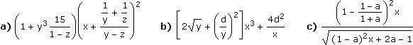
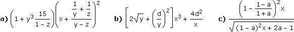
a) A(x + B)2 b) Ax3 +
B
x
Ax
√Bx + C
3 Termumformungen
Zwei Terme heißen äquivalent (= gleichwertig), wenn sie für alle Zahlen dasselbe ergeben. Bei Termumformungen nützen wir die Eigenschaften der arithmetischen Operatoren, um Terme in äquivalente Terme umzuschreiben.
Aufgabe 5: Vereinfache: 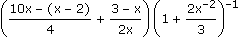
=
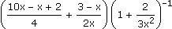 =
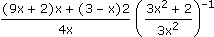 =
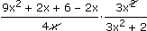 =
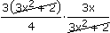 =
9x
4
⚠ Das Ergebnis hat einen größeren Definitionsbereich als der ursprüngliche Term (x ≠ 0).
4 Faktorisieren und binomische Formeln
Einen Term faktorisieren bedeutet, ihn so umzuformen, dass die letztauszuführende Operation eine Multiplikation ist. Dazu schauen wir zuerst, ob sich etwas herausheben lässt. Und dann, ob ein Muster wie bei folgenden binomischen Fomeln erkennbar ist:
• (x + y)(x – y) = x2 – y2
• (x ± y)2 = x2 ± 2xy + y2
Letzteres verallgemeinert ergibt das Pascal'sche Dreieck (bei dem die Summe benachbarter Zahlen darunter und dazwischen steht):
(x + y)0 =
(x + y)1 =
(x + y)2 =
(x + y)3 =
(x + y)4 =
···
(x + y)1 =
(x + y)2 =
(x + y)3 =
(x + y)4 =
···
1
1x + 1y
1x2 + 2xy + 1y2
1x3 + 3x2y + 3xy2 + 1y3
1x4 + 4x3y + 6x2y2 + 6xy3 + 1y4
···
1x + 1y
1x2 + 2xy + 1y2
1x3 + 3x2y + 3xy2 + 1y3
1x4 + 4x3y + 6x2y2 + 6xy3 + 1y4
···
Aufgabe 6: Faktorisiere:
a) 4a2 – 12ab + 9b2 b) 2x4 + 20x2 + 50 c) x3 + x2y – 4x – 4y
a) 4a2 – 12ab + 9b2 b) 2x4 + 20x2 + 50 c) x3 + x2y – 4x – 4y
a) 4a2 – 12ab + 9b2 = (2a)2 – 2·2a3b + (3b)2 = (2a – 3b)2
b) 2x4 + 20x2 + 50 = 2[x4 + 10x2 + 25] = 2[(x2)2 + 2x25 + 52] = 2(x2 + 5)2
c) Mitunter führt auch schrittweises Herausheben zum Ziel:
x3 + x2y – 4x – 4y = x2(x + y) – 4(x + y) = [x2 – 4](x + y) = (x + 2)(x – 2)(x + y)
Beim Abstrahieren im Hinblick auf die letztauszuführende Operation unterscheiden wir nach Anzahl der Summanden:
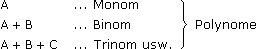
• Wenn Potenzen von x (mit natürlichen Exponenten) mit Zahlen multipliziert und aufaddiert werden, sprechen wir von einem Polynom inx. Die Zahlen heißen Koeffizienten des Polynoms. Der größte Exponent heißt Grad des Polynoms.
Beispiel:
5x3 – 2x2 + x + 4 ... Polynom 3ten Grades mit den Koeffizienten 5, –2, 1, 4
Letztlich versteifen wir uns nicht auf Zahlen als Koeffizienten und nennen alles Polynom in x, was nach Abstrahieren im Hinblick auf x so ausschaut:
Axn + Bxn–1 + ...
2 Polynomdivision
Wir bestimmen, womit man die größte Potenz des Divisors multiplizieren muss, um die größte Potenz des Dividenden zu erhalten. Dann multiplizieren wir den kompletten Divisor damit und subtrahieren das Ergebnis vom Dividenden. Was übrig bleibt, tritt an die Stelle des ursprünglichen Dividenden und das Ganze wird wiederholt, bis der Grad des Rests unter den des Divisors fällt:
Aufgabe 7: (6x3 – 8x2 – 5x + 9):(3x + 2) = ?
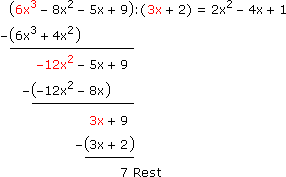
Also:
6x3 – 8x2 – 5x + 9 = (2x2 – 4x + 1)(3x + 2) + 7
bzw.
6x3 – 8x2 – 5x + 9
3x + 2
7
3x + 2
Eine Gleichung erhalten wir durch Verknüpung arithmetischer Terme mit dem Gleichheitsoperator. Die Lösungsmenge der Gleichung besteht aus allen Elementen der Grundmenge, die anstelle der Variablen eingesetzt die Gleichung wahr machen. Zur Bestimmung der Lösungsmenge formen wir die Gleichung um, bis die Variable "freigestellt" und die Lösung unmittelbar ablesbar ist.
• Wenn wir auf beiden Seiten einer Gleichung dieselbe Zahl addieren/subtrahieren bzw. beide Seiten mit derselben Zahl ≠ 0 multiplizieren/dividieren, ändert sich die Lösungsmenge nicht. Solche Äquivalenzumformungen sind also Vor- und Rückwärtsschluss in dem Sinn, dass das, was vorher gleich war, auch nach der Umformung gleich ist und das, was nachher gleich ist, schon vor der Umformung gleich war.
Aufgabe 8: Bestimme die Lösungsmenge in : + =
: x – 3
2
x
4
2x + 3
5
x – 3
2
x
4
2x + 3
5
20 + 20 = 20
x – 3
2
x
4
2x + 3
5
10(x – 3) + 5x = 4(2x + 3)
15x – 30 = 8x + 12 +30 –8x
7x = 42 :7
x = 6
L = {6}
2 Formeln umwandeln
Eine Formel ist eine Gleichung mit mehreren Variablen, in der typischerweise eine Variable bereits freigestellt ist. Diese heißt dann abhängig, die anderen unabhängig. Die Formel beschreibt damit ihre Lösungsmenge derart, dass beliebige Werte der unabhängigen Variablen zusammen mit dem laut Formel errechneten Wert der abhängigen Variaben die Lösungstupel bilden. Eine Formelumwandlung ändert dieses Abhängigkeitsverhältnis.
Aufgabe 9: Löse nach M auf:
a = M +c2
a = M +
M + b
3
a = M +
M + b
3
3a = 3M + (M + b)c2
3a = 3M + Mc2 + bc2 |–bc2
3a – bc2 = M(3 + c2) |:(3 + c2)
M =
3a – bc2
3 + c2
3 Ungleichungen lösen
Eine Ungleichung unterscheidet sich von einer Gleichung nur dadurch, dass ein "spitzer" Vergleichsoperator an die Stelle des Gleichheitszeichens tritt. Was wir zu Gleichungen gesagt haben, gilt auch für Ungleichungen, aber mit einer Ergänzung: Wenn wir beide Seiten der Ungleichung mit einer negativen Zahl multiplizieren/dividieren, müssen wir den "Spitz" umdrehen.
Aufgabe 10: Bestimme die Lösungsmenge in : < 2x – 15
: 4(x + 2) + 7
–3
4(x + 2) + 7
–3
4x + 8 + 7 > –6x + 45 –15 +6x
10x > 30:10
x > 3
L = ]3, ∞[
Wenn Variable mit Zahlen multipliziert, aufaddiert und einer Zahl gleichgesetzt werden, sprechen wir von einer linearen Gleichung. Wenn mehrere lineare Gleichungen mit dem UND-Operator verknüpft werden, von einem linearen Gleichungssystem.
Aufgabe 11: Bestimme die Lösungsmenge in 3 für:
(19x – 6y – 3z = 1) ∧ (–5x + 3y + z = 5) ∧ (–9x + 10y + 4z = 23)
3 für:
(19x – 6y – 3z = 1) ∧ (–5x + 3y + z = 5) ∧ (–9x + 10y + 4z = 23)
Üblicherweise wird ein Gleichungssystem nicht so, sondern in Form nummerierter Gleichungen untereinander geschrieben:
(1) 19x – 6y – 3z = 1
(2) –5x + 3y + z = 5
(3) –9x + 10y + 4z = 23
(2) –5x + 3y + z = 5
(3) –9x + 10y + 4z = 23
Lösungsvariante 1: Substitutionsverfahren
Wir stellen in einer Zeile eine Variable frei und das Ergebnis ersetzt (lat. substituere) diese Variable in den übrigen Zeilen:
(1) 19x – 6y – 3z = 1
(2) –5x + 3y + z = 5  z = 5x – 3y + 5
z = 5x – 3y + 5
(3) –9x + 10y + 4z = 23
z = 5x – 3y + 5(3) –9x + 10y + 4z = 23
 (1) 19x – 6y – 3(5x – 3y + 5) = 1
(1) 19x – 6y – 3(5x – 3y + 5) = 1
19x – 6y – 15x + 9y – 15 = 1
4x + 3y = 16
4x + 3y = 16
(3) –9x + 10y + 4(5x – 3y + 5) = 23
–9x + 10y + 20x – 12y + 20 = 23
11x – 2y = 3
11x – 2y = 3
Damit haben wir das 3x3-System auf ein 2x2-System reduziert:
(1') 4x + 3y = 16
(2') 11x – 2y = 3 y = 5,5x – 1,5
y = 5,5x – 1,5 (1') 4x + 3(5,5x – 1,5) = 16
4x + 16,5x – 4,5 = 16
20,5x = 20,5
x = 1
20,5x = 20,5
x = 1
(2') y = 5,5·1 – 1,5 = 4 (2) z = 5·1 – 3·4 + 5 = –2L = {(1,4,–2)}
Lösungsvariante 2: Eliminationsverfahren
Wir wählen eine Variablenspalte aus, um sie zu beseitigen (lat. eliminare). Dazu kombinieren wir eine Zeile mit allen übrigen, indem wir sie geeignet mit Zahlen multiplizieren und dann addieren:
(1) 19x – 6y – 3z = 1|·1
(2) –5x + 3y + z = 5 |·3 |·(–4)
(3) –9x + 10y + 4z = 23 |·1
(3) –9x + 10y + 4z = 23 |·1
(1) 19x – 6y – 3z = 1
(2) –15x + 9y + 3z = 15
(2) –15x + 9y + 3z = 15
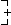
4x + 3y = 16
(2) 20x – 12y – 4z = –20
(3) –9x + 10y + 4z = 23
(3) –9x + 10y + 4z = 23
11x – 2y = 3
Damit haben wir das 3x3-System auf ein 2x2-System reduziert:
(1') 4x + 3y = 16 |·2
(2') 11x – 2y = 3 |·3
(2') 11x – 2y = 3 |·3
(1') 8x + 6y = 32
(2') 33x – 6y = 9
(2') 33x – 6y = 9
41x = 41
x = 1
(2') 11·1 – 2y = 3 y = 4 (2) –5·1 + 3·4 + z = 5 z = –2L = {(1,4,–2)}
• Das Prozentzeichen interpretieren wir als unären Operator:
% := ·
1
100
Verwendet wird das Prozentzeichen im folgenden Kontext:
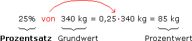
Aufgabe 12:
a) 86% von 250 W sind?
b) 2,4 m sind wie viel % von 80 m?
c) 72 EUR sind 4,5% wovon?
a) x = 0,86·250 W = 215 W
b) x·80 m = 2,4 m
x = 2,4 m
80 m
c) 0,045·x = 72 EUR
x = 72 EUR
0,045
Problematisch ist, dass oft nur von c% die Rede ist und man aus dem Kontext schließen muss, was hier als Prozentsatz von wem ausgedrückt wird. Wenn wir etwa sagen, dass sich ein Wert um ±c% ändert, ist die Änderung als Prozentsatz des alten Werts gemeint.
Gneu = Galt ± c%Galt = (1±c%)Galt
Änderungsfaktor
Aufgabe 13: Bestimme den Änderungsfaktor und beantworte damit:
a) 40 kg um 7% erhöht ergibt? b) 125 L um 4% vermindert ergibt? c) 15% Rabatt auf was ergibt 34 EUR als neuen Preis?
a) 40 kg um 7% erhöht ergibt? b) 125 L um 4% vermindert ergibt? c) 15% Rabatt auf was ergibt 34 EUR als neuen Preis?
a) x = 1,07·40 kg = 42,8 kg
b) x = 0,96·125 L = 120 L
c) 0,85·x = 34 EUR
x = 34 EUR
0,85
2 Textaufgaben
Aufgabe 14: Die Orte A und B sind 87 km voneinander entfernt. Ein Auto fährt ab 12:00 Uhr von A nach B, ein zweites ab 12:30 Uhr von B nach A. Die Geschwindigkeit des ersten Autos liegt bei 75 km/h, die des zweiten um 20% höher. Wann fahren sie aneinander vorbei?
[Länge] = km, [Zeit] = h
t = Zeit von 12:00 Uhr bis zum Treffzeitpunkt
Strecke
A→Treff
A→Treff
Strecke
B→Treff
B→Treff
Strecke
A→B
A→B
75t
+
75·1,2(t–0,5)
=
87
75t + 90t – 45 = 87 +45
165t = 132:165
t = 0,8 (h) 12:48 Uhr
12:48 Uhr
Aufgabe 15: Zwei Salzlösungen werden gemischt: 2 kg der ersten und 6 kg der zweiten ergeben eine 12%ige Salzlösung, 5 kg der ersten und 3 kg der zweiten eine 15%ige Salzlösung. Welchen Salzgehalt haben die beiden Ausgangslösungen?
Hinweis: Lösungen bestehen aus gelöstem Stoff und Lösungsmittel. Mit c%iger Lösung ist der gelöste Stoff als Prozentsatz der Lösung gemeint.
Hinweis: Lösungen bestehen aus gelöstem Stoff und Lösungsmittel. Mit c%iger Lösung ist der gelöste Stoff als Prozentsatz der Lösung gemeint.
x = c1% = Salzgehalt von Lösung1
y = c2% = Salzgehalt von Lösung2
kg Salz
in Lösung1
in Lösung1
kg Salz
in Lösung2
in Lösung2
kg Salz
in Mischung
in Mischung
1. Mischung:
x·2
+
y·6
=
0,12·8
2. Mischung:
x·5
+
y·3
=
0,15·8
(1) 2x + 6y = 0,12·8 ·(–1)
(2) 5x + 3y = 0,15·8 ·2
(2) 5x + 3y = 0,15·8 ·2
(1) –2x – 6y = –0,96
(2) 10x + 6y = 2,40
(2) 10x + 6y = 2,40
8x = 1,44
x = 0,18 = 18% (1) 2·0,18 + 6y = 0,96 y = 0,10 = 10%
(1) 2·0,18 + 6y = 0,96 y = 0,10 = 10%